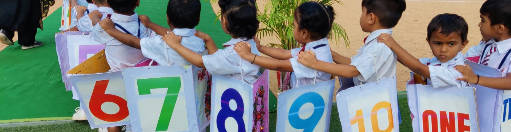
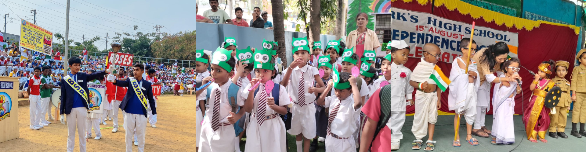
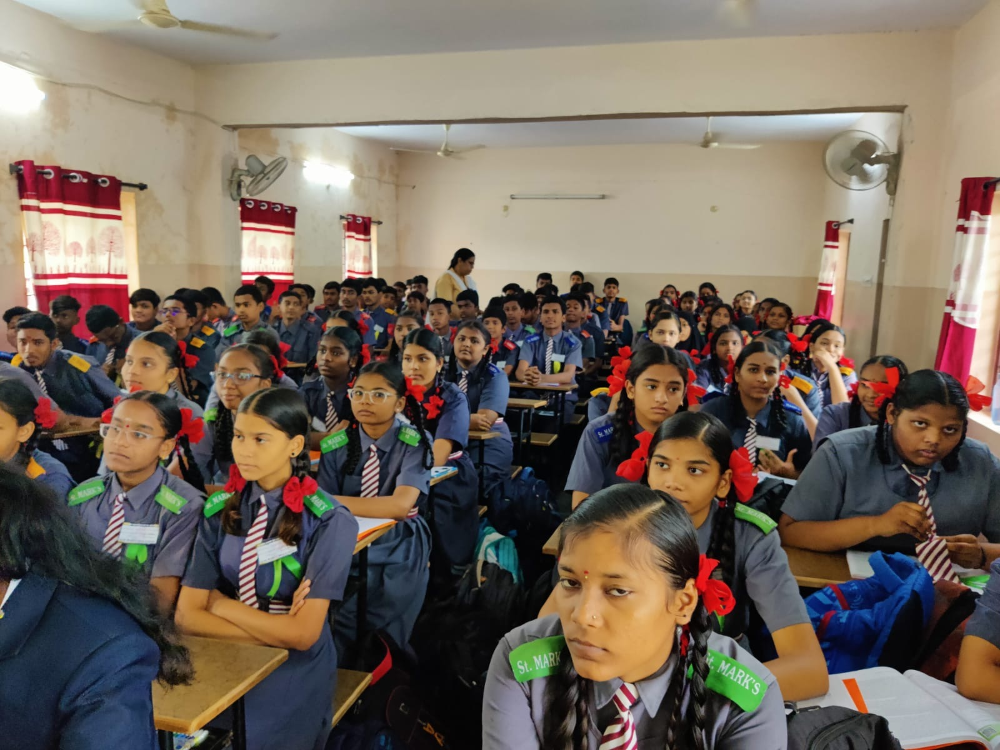
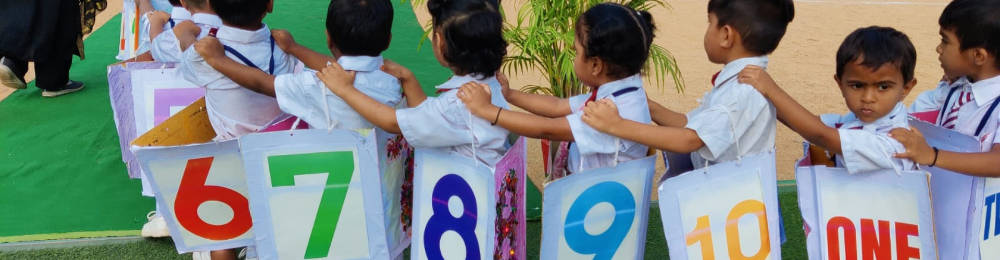
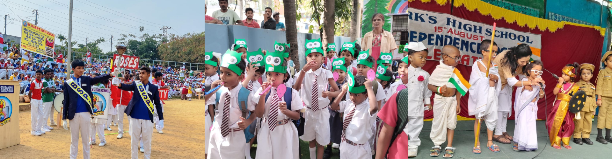
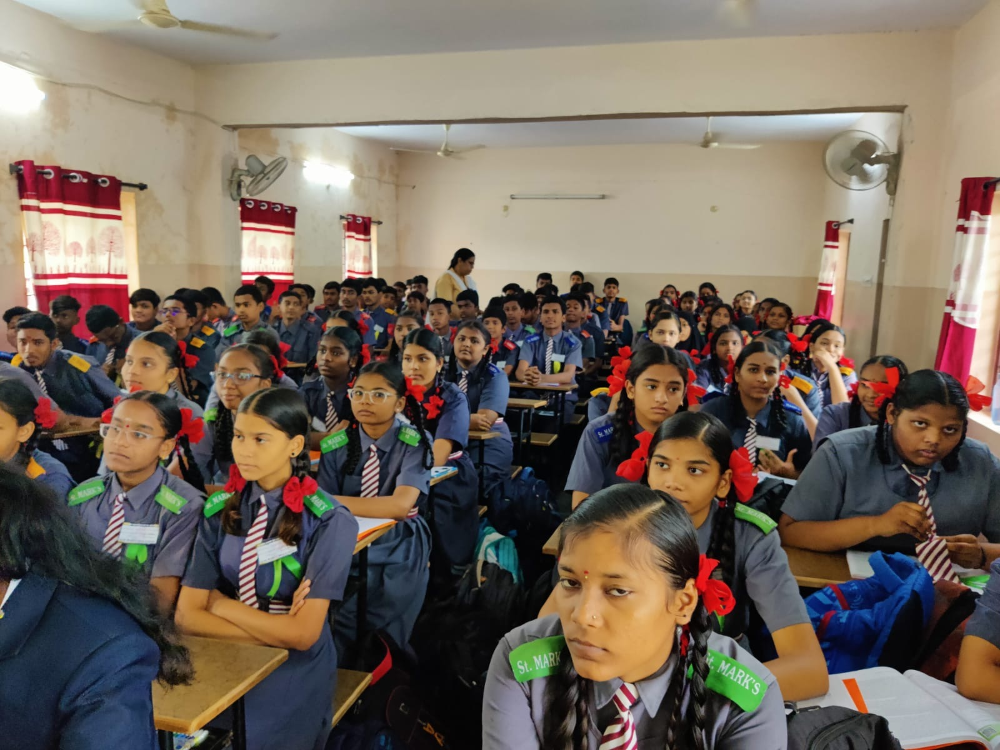

Our mission at St. Mark's High School is to foster a nurturing and dynamic learning environment where students are encouraged to explore their full potential. We strive to develop well-rounded individuals who are confident, responsible, and compassionate, ready to face the challenges of the modern world. Through a balanced approach to academics, co-curricular activities, and moral values, we aim to inspire lifelong learners and future leaders who will contribute positively to society.
 





Culture of Excellence
Acknowledging the incredible efforts of our school community.
0
High Performance Teams
0
Innovation & Creativity
0
Customer-Centric Approach
0
Branches